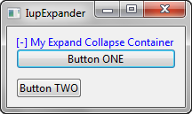
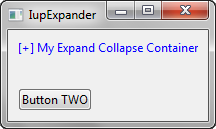

Creates a void container that can interactively show or hide its child.
It does not have a native representation, but it contains also a IupCanvas to implement the bar handler.
Ihandle* IupExpander(Ihandle* child); [in C]
iup.expander{child: ihandle} -> (elem: ihandle) [in Lua]
expander(child) [in LED]
child: Identifier of an interface element. It can be NULL.
Returns: the identifier of the created element, or NULL if an error occurs.
AUTOSHOW (non inheritable): enables the automatic show of the child when mouse is over the handler more than 1 second. Default: No.
BARSIZE (non inheritable): controls the size of the bar handler. Default: the height of a text line plus 5 pixels.
BGCOLOR: ignored, transparent in all systems. Will use the background color of the native parent.
FGCOLOR: Text color. Default: the global attribute DLGFGCOLOR.
BARPOSITION (creation only): Indicates the bar handler position. Possible values are "TOP", "BOTTOM", "LEFT" or "RIGHT". Default: "TOP".
EXPAND (non inheritable): The default value is "YES".
STATE (non inheritable): Show or hide the container elements. Possible values: "OPEN" (expanded) or "CLOSE" (collapsed). Default: OPEN. Setting this attribute will automatically change the layout of the entire dialog so the child can be recomposed.
TITLE (non inheritable): the title, shown in the title bar near the expand or collapse symbol. Shown only when BARPOSITION=TOP.
WID (read-only): returns -1 if mapped.
FONT, SIZE, RASTERSIZE, CLIENTSIZE, CLIENTOFFSET, POSITION, MINSIZE, MAXSIZE: also accepted.
The IupCanvas bar handler is always the first child of the split. It can be obtained using IupGetChild or IupGetNextChild.
The container can be created with no elements and be dynamic filled using IupAppend or IupInsert.
When the TITLE is defined and BARPOSITION=TOP then the expand/collapse symbol is left aligned. In all other situations the expand/collapse symbol is centered.
When AUTOSHOW=Yes the dialog layout is NOT recalculated. The child is shown on top of the dialog, so the other children will not move or redraw. After the mouse is move away from the child then it is automatically hidden. IMPORTANT: this feature will ONLY work if the child is a native container like IupFrame, IupScrollBar or IupTabs.
|  Container Expanded (STATE = "OPEN") |
 Container Collapsed (STATE = "CLOSE") |